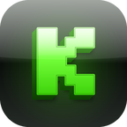
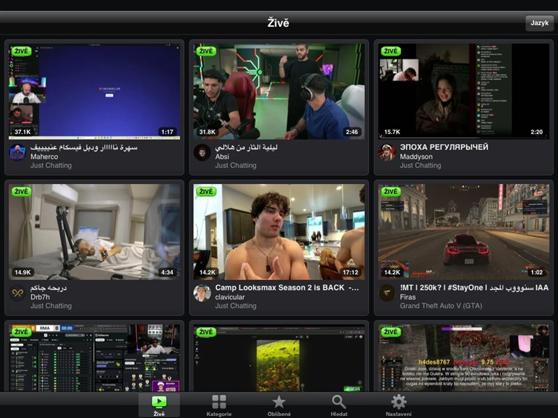
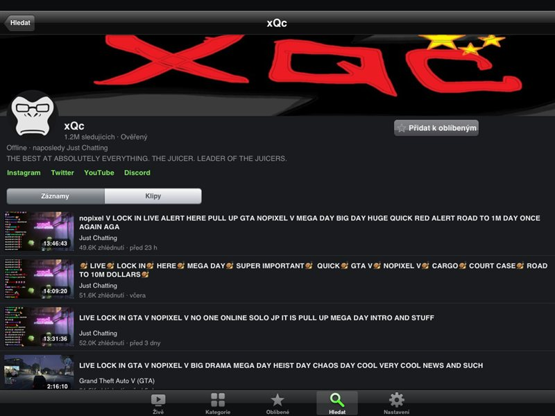
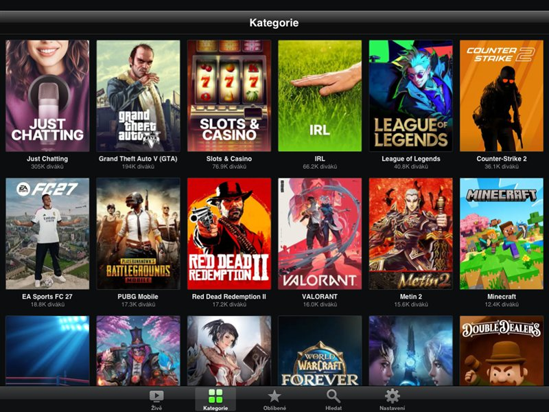
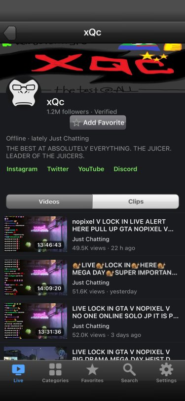

Kick: live streams with chat, past broadcasts, clips
A universal Kick client in the glossy iOS 6 look, dark like Kick by default. Live streams with the chat, past broadcasts with the chat replay, clips, categories, search and favourites. No account needed: everything it shows is public. Kick's servers speak only today's TLS and serve their pictures as WebP, so the app carries its own TLS stack and WebP decoder.




Unofficial apps by samcejko, not affiliated with or endorsed by Twitch, Google, Apple, TikTok, Instagram, Meta, Spotify, Kick, NVIDIA, Mojang, Microsoft, OpenRouter, Vine, X, diVine or the Moonlight, Sunshine and Apollo projects.